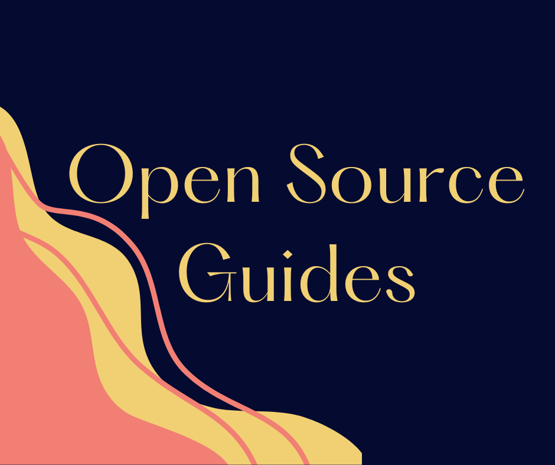
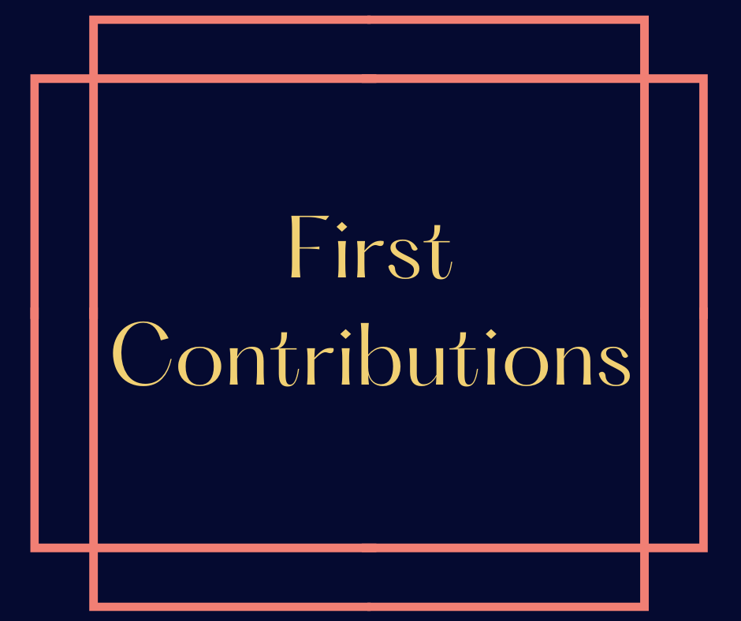

What Are Open Source Projects?
Projects that you can contribute to! The code is publicly accessible and can be read, modified, or enhanced. Open source projects are built by communities — not just one author. Check out the helpful resources below to get started.

Helpful guides covering how to contribute, the legal side of open source, and finding users for your project.

A GitHub repository that helps beginners make their very first contribution to open source.